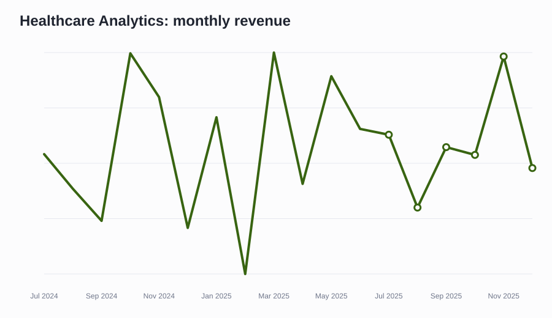
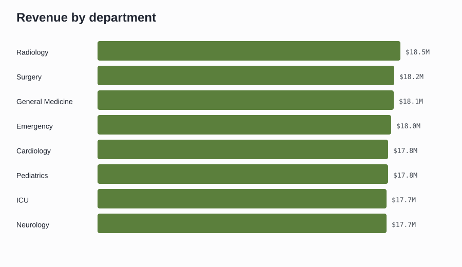
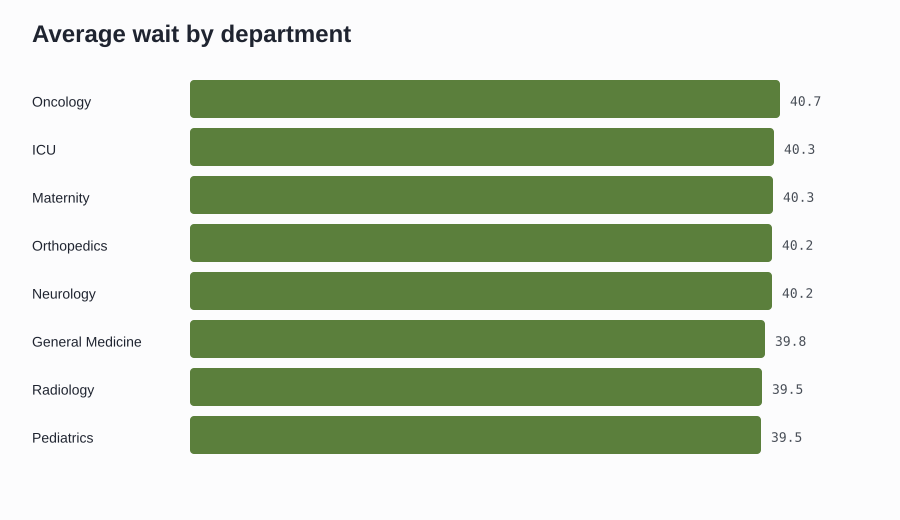
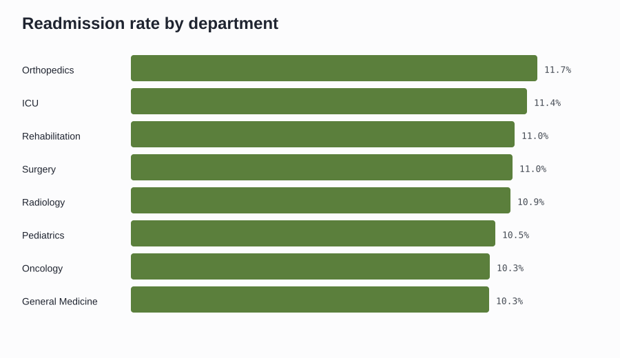
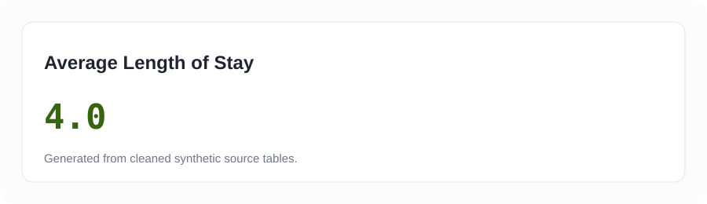
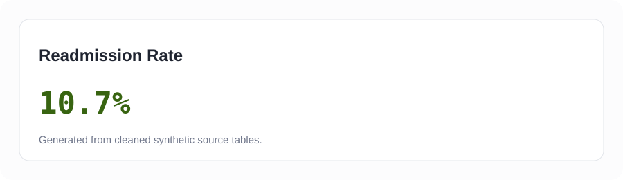

Executive Overview
Interactive Power BI build spec and local chart assets are mapped to this dashboard page.
Admissions
Interactive Power BI build spec and local chart assets are mapped to this dashboard page.
Patient Analytics
Interactive Power BI build spec and local chart assets are mapped to this dashboard page.
Doctor Analytics
Interactive Power BI build spec and local chart assets are mapped to this dashboard page.
Department Analytics
Interactive Power BI build spec and local chart assets are mapped to this dashboard page.
Financial Analytics
Interactive Power BI build spec and local chart assets are mapped to this dashboard page.
Sources and methodology
Metrics reconcile to `data/cleaned` CSV files. SQL patterns, notebook analysis, and metric definitions are included in this repository.